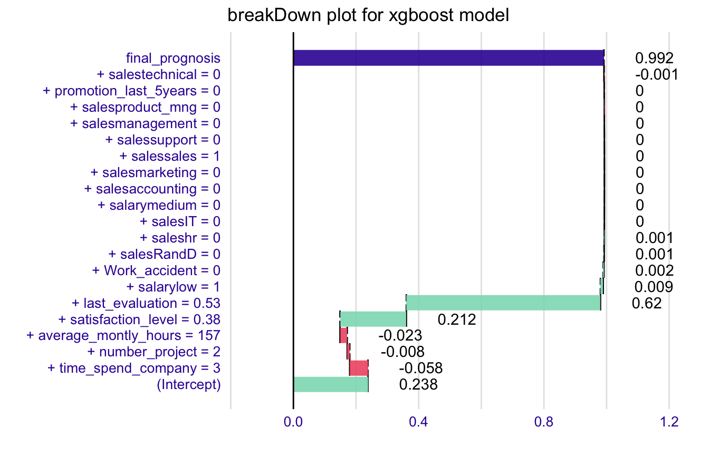

How to use breakDown package for models created with xgboost
Przemyslaw Biecek
2019-03-27
break_xgboost.RmdThis example demonstrates how to use the breakDown package for models created with the xgboost package.
library("breakDown")
library(xgboost)
model_martix_train <- model.matrix(left ~ . - 1, HR_data)
data_train <- xgb.DMatrix(model_martix_train, label = as.numeric(HR_data$left))
param <- list(objective = "reg:linear")
HR_xgb_model <- xgb.train(param, data_train, nrounds = 50)
HR_xgb_model
#> ##### xgb.Booster
#> raw: 187 Kb
#> call:
#> xgb.train(params = param, data = data_train, nrounds = 50)
#> params (as set within xgb.train):
#> objective = "reg:linear", silent = "1"
#> xgb.attributes:
#> niter
#> callbacks:
#> cb.print.evaluation(period = print_every_n)
#> # of features: 19
#> niter: 50
#> nfeatures : 19Now we are ready to call the broken() function.
library("breakDown")
nobs <- model_martix_train[1L, , drop = FALSE]
explain_2 <- broken(HR_xgb_model, new_observation = nobs,
data = model_martix_train)
explain_2
#> contribution
#> (Intercept) 0.238
#> + time_spend_company = 3 -0.058
#> + number_project = 2 -0.008
#> + average_montly_hours = 157 -0.023
#> + satisfaction_level = 0.38 0.212
#> + last_evaluation = 0.53 0.620
#> + salarylow = 1 0.009
#> + Work_accident = 0 0.002
#> + salesRandD = 0 0.001
#> + saleshr = 0 0.001
#> + salesIT = 0 0.000
#> + salarymedium = 0 0.000
#> + salesaccounting = 0 0.000
#> + salesmarketing = 0 0.000
#> + salessales = 1 0.000
#> + salessupport = 0 0.000
#> + salesmanagement = 0 0.000
#> + salesproduct_mng = 0 0.000
#> + promotion_last_5years = 0 0.000
#> + salestechnical = 0 -0.001
#> final_prognosis 0.992
#> baseline: 0And plot it.
